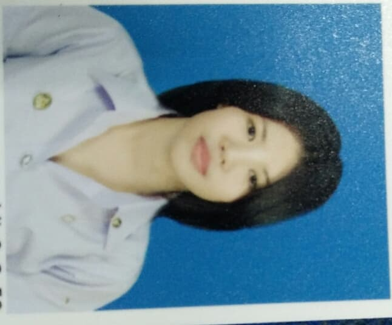

ประวัติข้อมูลส่วนตัว

นางสาว จรุญวรรณ สุธรรมวงศ์
ที่อยู่ปัจจบัน 39/4 หมู่ที่ 13 ตำบล แสนสุข
อำเภอวาริน จังหวัดอุบลราชธานี 34190
เบอร์โทรศัพท์ 0960691765
ข้อมูลส่วนตัว
วัน - เดือน - ปีเกิด 31 กรกฏาคม 2540 อายุ 21 ปี
น้ำหนัก 46 กก. ส่วนสูง 159 ซ.ม.
สัญชาติ ไทย เชื้อชาติไทย
ศาสนา พุทธ สถานภาพ โสด สุขภาพ แข็งแรง
การศึกษา
- 2553 – 2556 ระดับมัธยมศึกษาตอนต้น โรงเรียนลือคำหาญวารินชำราบ เกรดเฉลี่ย 3.28
- 2557 – 2559 ระดับมัธยมศึกษาตอนปลาย โรงเรียนลือคำหาญวารินชำราบ เกรดเฉลี่ย 2.80
- 2559 – ปัจจุบัน ระดับปริญญาตรี มหาวิทยาลัยราชภัฏอุบลราชธานี คณะเทคโนโลยีอุตสาหกรรม สาขาเทคโนโลยีคอมพิวเตอร์
เกรดเฉลี่ย 3.63
ประสบการณ์
- 2560 โครงการสำรวจข้อมูลผู้มีรายได้น้อยระบบบันทึกข้อมูล ภาคตะวันออกเฉียงเหนือ ตำแหน่งผู้บันทึกข้อมูล
ความรู้/ทักษะ
- สามารถใช้คอมพิวเตอร์โปรแกรม Visual studio,และโปรแกรม Microsoft Office ได้
ความสนใจพิเศษ
- สนใจด้านการซ่อมบำรุงคอมพิวเตอร์
- สนใจด้านการประกอบคอมพิวเตอร์
บุคคลอ้างอิง
- อาจารย์ศิริภิญญา อาสา ตำแหน่งอาจารย์ประจำสาขาเทคโนโลยีคอมพิวเตอร์ โทร.082-1375372
- อาจารย์ปิยภัทร โกษาพันธุ์ ตำแหน่งอาจารย์ประจำสาขาเทคโนโลยีคอมพิวเตอร์ โทร.088-081-1795
- อาจารย์ภัทรกิตติ ไชยสิงห์ ตำแหน่งอาจารย์ประจำสาขาเทคโนโลยีคอมพิวเตอร์ โทร.086-867-5646